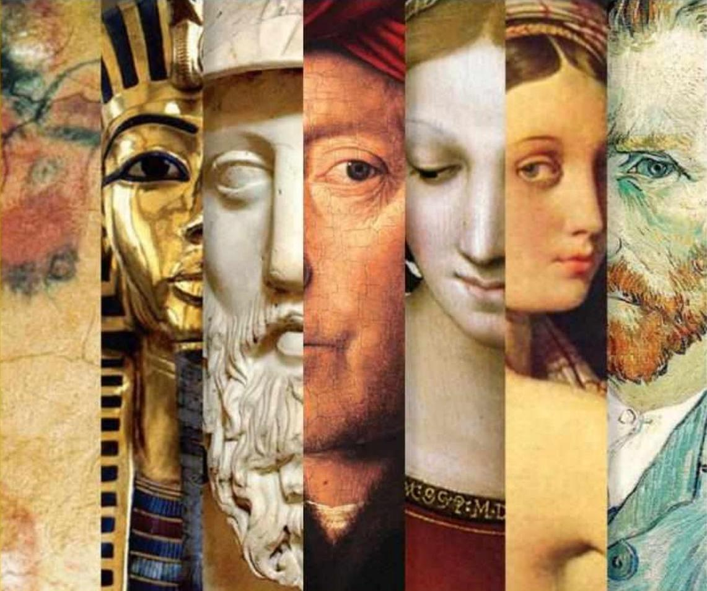

Arte
 El arte (del latín ars, artis, y este del griego τέχνη téchnē) 1 es entendido generalmente como cualquier actividad o producto realizado con una finalidad estética y también comunicativa, mediante la cual se expresan ideas, emociones y, en general, una visión del mundo, a través de diversos recursos, como los plásticos, lingüísticos, sonoros, corporales y mixtos. 2 El arte es un componente de la cultura, reflejando en su concepción las bases económicas y sociales, y la transmisión de ideas y valores, inherentes a cualquier cultura humana a lo largo del espacio y el tiempo. Se suele considerar que con la aparición del Homo sapiens el arte tuvo en principio una función ritual, mágica o religiosa (arte paleolítico), pero esa función cambió con la evolución del ser humano, adquiriendo un componente estético y una función social, pedagógica, mercantil o simplemente ornamental.
El arte (del latín ars, artis, y este del griego τέχνη téchnē) 1 es entendido generalmente como cualquier actividad o producto realizado con una finalidad estética y también comunicativa, mediante la cual se expresan ideas, emociones y, en general, una visión del mundo, a través de diversos recursos, como los plásticos, lingüísticos, sonoros, corporales y mixtos. 2 El arte es un componente de la cultura, reflejando en su concepción las bases económicas y sociales, y la transmisión de ideas y valores, inherentes a cualquier cultura humana a lo largo del espacio y el tiempo. Se suele considerar que con la aparición del Homo sapiens el arte tuvo en principio una función ritual, mágica o religiosa (arte paleolítico), pero esa función cambió con la evolución del ser humano, adquiriendo un componente estético y una función social, pedagógica, mercantil o simplemente ornamental.
El vocablo ‘arte’ tiene una extensa acepción, pudiendo designar cualquier actividad humana hecha con esmero y dedicación, o cualquier conjunto de reglas necesarias para desarrollar de forma óptima una actividad, se habla así de:
Concepto
La definición de arte es abierta, subjetiva y discutible. No existe un acuerdo unánime entre historiadores, filósofos o artistas. A lo largo del tiempo se han dado numerosas definiciones de arte, entre ellas: «el arte es el recto ordenamiento de la razón» (Tomás de Aquino); «el arte es aquello que establece su propia regla» (Schiller); «el arte es el estilo» (Max Dvořák); «el arte es expresión de la sociedad» (John Ruskin); «el arte es la libertad del genio» (Adolf Loos); «el arte es la idea» (Marcel Duchamp); «el arte es la novedad» (Jean Dubuffet); «el arte es la acción, la vida» (Joseph Beuys); «arte es todo aquello que los hombres llaman arte» (Dino Formaggio); «el arte es la mentira que nos ayuda a ver la verdad» (Pablo Picasso); «arte es vida, vida es arte» (Wolf Vostell). El concepto ha ido variando con el paso del tiempo: hasta el Renacimiento, arte solo se consideraban las artes liberales; la arquitectura, la escultura y la pintura eran “manualidades”. El arte ha sido desde siempre uno de los principales medios de expresión del ser humano, a través del cual manifiesta sus ideas y sentimientos, la forma como se relaciona con el mundo. Su función puede variar desde la más práctica hasta la más ornamental, puede tener un contenido religioso o simplemente estético, puede ser duradero o efímero. En el siglo XX se pierde incluso el sustrato material: decía Beuys que la vida es un medio de expresión artística, destacando el aspecto vital, la acción. Así, todo el mundo es capaz de ser artista.
Evolución Historica del concepto de arte
En la antigüedad clásica grecorromana, una de las principales cunas de la civilización occidental y primera cultura que reflexionó sobre el arte, se consideraba el arte como una habilidad del ser humano en cualquier terreno productivo, siendo prácticamente un sinónimo de ‘destreza’: destreza para construir un objeto, para comandar un ejército, para convencer al público en un debate, o para efectuar mediciones agronómicas. En definitiva, cualquier habilidad sujeta a reglas, a preceptos específicos que la hacen objeto de aprendizaje y de evolución y perfeccionamiento técnico. En cambio, la poesía, que venía de la inspiración, no estaba catalogada como arte. Así, Aristóteles, por ejemplo, definió el arte como aquella «permanente disposición a producir cosas de un modo racional», y Quintiliano estableció que era aquello «que está basado en un método y un orden» (via et ordine).4 Platón, en el Protágoras, habló del arte, opinando que es la capacidad de hacer cosas por medio de la inteligencia, a través de un aprendizaje. Para Platón, el arte tiene un sentido general, es la capacidad creadora del ser humano.5 Casiodoro destacó en el arte su aspecto productivo, conforme a reglas, señalando tres objetivos principales del arte: enseñar (doceat), conmover (moveat) y complacer (delectet).
Durante el Renacimiento se empezó a gestar un cambio de mentalidad, separando los oficios y las ciencias de las artes, donde se incluyó por primera vez a la poesía, considerada hasta entonces un tipo de filosofía o incluso de profecía –para lo que fue determinante la publicación en 1549 de la traducción italiana de la Poética de Aristóteles–. En este cambio intervino considerablemente la progresiva mejora en la situación social del artista, debida al interés que los nobles y ricos prohombres italianos empezaron a mostrar por la belleza. Los productos del artista adquirieron un nuevo estatus de objetos destinados al consumo estético y, por ello, el arte se convirtió en un medio de promoción social, incrementándose el mecenazgo artístico y fomentando el coleccionismo.7 Surgieron en ese contexto varios tratados teóricos acerca del arte, como los de Leon Battista Alberti (De Pictura, 1436-1439; De re aedificatoria, 1450; y De Statua, 1460), o Los Comentarios (1447) de Lorenzo Ghiberti. Alberti recibió la influencia aristotélica, pretendiendo aportar una base científica al arte. Habló de decorum, el tratamiento del artista para adecuar los objetos y temas artísticos a un sentido mesurado, perfeccionista. Ghiberti fue el primero en periodificar la historia del arte, distinguiendo antigüedad clásica, periodo medieval y lo que llamó “renacer de las artes”.
Con el manierismo comenzó el arte moderno: las cosas ya no se representan tal como son, sino tal como las ve el artista. La belleza se relativiza, se pasa de la belleza única renacentista, basada en la ciencia, a las múltiples bellezas del manierismo, derivadas de la naturaleza. Apareció en el arte un nuevo componente de imaginación, reflejando tanto lo fantástico como lo grotesco, como se puede percibir en la obra de Brueghel o Arcimboldo. Giordano Bruno fue uno de los primeros pensadores que prefiguró las ideas modernas: decía que la creación es infinita, no hay centro ni límites –ni Dios ni hombre–, todo es movimiento, dinamismo. Para Bruno, hay tantos artes como artistas, introduciendo la idea de originalidad del artista. El arte no tiene normas, no se aprende, sino que viene de la inspiración.
Elementos del fenómeno artistico

Se denomina artista a aquella persona que, o bien practica un arte, o bien destaca en él. Por definición, un artista es quien elabora una obra de arte; así pues, y en paralelo a la evolución del concepto de arte que hemos visto anteriormente, en épocas pasadas un artista era cualquier persona que trabajase en las artes liberales o vulgares, desde un gramático, un astrónomo o un músico hasta un albañil, un alfarero o un ebanista.
una obra es una realización material, que tiene una existencia objetiva y que es perceptible sensiblemente. El término proviene del latín opera, que deriva de opus (‘trabajo’), por lo que equivale a trabajo como objeto, es decir, como resultado de un trabajo. Una obra de arte puede ser tanto el objeto material en sí –una pintura, una escultura, un grabado– como una producción intelectual donde la artisticidad se encuentra en el momento de su ejecución o captación por medio de los sentidos: así, en la literatura, el arte se encuentra más en la lectura de la obra que no en el lenguaje escrito que le sirve de vehículo de comunicación, o en el medio material (libro, revista) que le sirva de soporte; en música, el arte se encuentra en su percepción auditiva, no en la partitura en que se ve reflejada. Así, en el arte conceptual se valora más la concepción de la obra de arte por parte del artista que no su realización material. En ese sentido, una obra de arte puede tener varios niveles de elaboración: decía Panofsky que, al escribir una carta, se cumple básicamente el objetivo de comunicarse; pero si se escribe poniendo especial atención en la caligrafía, puede tener un sentido artístico valorable per se; y si, además, se escribe en un tono poético o literario, la carta trasciende su sustrato material para convertirse en una obra de arte valorable por sus cualidades intrínsecas. Por otro lado, hay que valorar la percepción del receptor: un objeto puede no estar elaborado con finalidades artísticas pero ser interpretado así por la persona que lo percibe –como en los ready-made de Duchamp–. Igualmente, una obra de arte puede tener diversas interpretaciones según la persona que lo valore, como remarcó Umberto Eco con su concepto de “obra abierta”.
un factor cada vez más determinante en el mundo del arte es el del público, la gente que acude a museos o exposiciones y que manifiesta cada vez más un sentido crítico y apreciativo del arte, pudiendo influir en las modas y los gustos artísticos. En siglos anteriores, el arte era un círculo cerrado al que solo tenían acceso las clases más favorecidas, que eran las que encargaban y adquirían obras de arte. Sin embargo, desde la apertura de los primeros museos públicos en el siglo XVIII, la participación del público en general en la apreciación del arte ha sido cada vez mayor, favorecida sobre todo por el aumento de medios de comunicación de masas (prensa, libros, revistas y, más recientemente, medios digitales e Internet).
Clasificación
La clasificación del arte, o de las distintas facetas o categorías que pueden considerarse artísticas, ha tenido una evolución paralela al concepto mismo de arte: como se ha visto anteriormente, durante la antigüedad clásica se consideraba arte todo tipo de habilidad manual y destreza, de tipo racional y sujeta a reglas; así, entraban en esa denominación tanto las actuales bellas artes como la artesanía y las ciencias, mientras que quedaban excluidas la música y la poesía. Una de las primeras clasificaciones que se hicieron de las artes fue la de los filósofos sofistas presocráticos, que distinguieron entre “artes útiles” y “artes placenteras”, es decir, entre las que producen objetos de cierta utilidad y las que sirven para el entretenimiento. Plutarco introdujo, junto a estas dos, las “artes perfectas”, que serían lo que hoy consideramos ciencias. Platón, por su parte, estableció la diferencia entre “artes productivas” y “artes imitativas”, según si producían objetos nuevos o imitaban a otros.
Durante la era romana hubo diversos intentos de clasificar las artes: Quintiliano dividió el arte en tres esferas: “artes teóricas”, basadas en el estudio (principalmente, las ciencias); “artes prácticas”, basadas en una actividad, pero sin producir nada (como la danza); y “artes poéticas” –según la etimología griega, donde ποίησις (poíêsis) quiere decir ‘producción’–, que son las que producen objetos. Cicerón catalogó las artes según su importancia: “artes mayores” (política y estrategia militar), “artes medianas” (ciencias, poesía y retórica) y “artes menores” (pintura, escultura, música, interpretación y atletismo). Plotino clasificó las artes en cinco grupos: las que producen objetos físicos (arquitectura), las que ayudan a la naturaleza (medicina y agricultura), las que imitan a la naturaleza (pintura), las que mejoran la acción humana (política y retórica) y las intelectuales (geometría).
Durante la Edad Media continuó la división del arte entre artes liberales y vulgares –llamadas estas últimas entonces “mecánicas”–, si bien hubo nuevos intentos de clasificación: Boecio dividió las artes en ars y artificium, clasificación similar a la de artes liberales y vulgares, pero en una acepción que casi excluía las formas manuales del campo del arte, dependiendo este tan solo de la mente. En el siglo XII, Radulfo de Campo Lungo intentó hacer una clasificación de las artes mecánicas, reduciéndolas a siete, igual número que las liberales. En función de su utilidad cara a la sociedad, las dividió en: ars victuaria, para alimentar a la gente; lanificaria, para vestirles; architectura, para procurarles una casa; suffragatoria, para darles medios de transporte; medicinaria, que les curaba; negotiatoria, para el comercio; militaria, para defenderse.41 En el siglo XVI empezó a considerarse que la arquitectura, la pintura y la escultura eran actividades que requerían no solo oficio y destreza, sino también un tipo de concepción intelectual que las hacían superiores a otros tipos de manualidades. Se gestaba así el concepto moderno de arte, que durante el Renacimiento adquirió el nombre de arti del disegno (artes del diseño), por cuanto comprendían que esta actividad –el diseñar– era la principal en la génesis de las obras de arte.